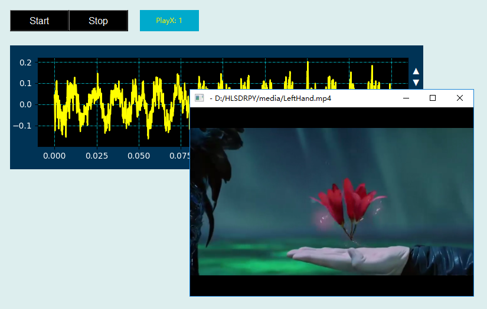

MP3/Mp4格式音视频文件播放控件是利用ffmpeg软件包中的ffplay.exe命令行软件进行音频/视频文件频播，可以播放各种常见格式的音频/视频文件，并通过回调函数形式返回当前播放的声音信号数据，用户可编程定义其具体后续显示和信号处理操作。其图形显示效果如下：
添加一个按钮控件控制播放的启停，一个曲线控件显示当前的信号，再进行简单的数据流连接后就可以形成一个最基本的音频/视频播放程序：
mHBut1=dr.DRHButtonGroupX(win,70,30,200,36,'#000000','#ffffff','Start,Stop',2,12,0)
import drvi.drviSimpleAudio as ply
mPlayer2=ply.DRPlayX(win,290,30,100,36,'#00aacc','#eeee00','ffmpeg511')
mPlot3=dr.DRPlotX(win,70,100,700,240,"",'#003355','#000000',"#ffffff","#00eeff","#ffff00",0,0,0,0,tData,xData)
mHBut1.addCallBackSingle(mPlayer2.setValueSingle)
mPlayer2.addCallBack2DX(mPlot3.setValue2DX)
其运行效果如下：

在Python程序GUI界面中创建一个MP3/Mp4格式音视频文件播放控件的命令为:
hl=dr.DRPlayX(win,x,y,w,h,cb,cf,ffmpegPath)
其中hl是创建时用户设定的变量名。MP3/Mp4格式音视频文件播放控件可以通过回调函数绑定的方式采集的声音数据传递给绑定的回调函数，格式为：
hl.addCallBack2DX(setValue2DX)
被绑定的回调函数是一个二维曲线数组函数，收到的是当前信号的时间采样间隔和信号数组，其函数形式为：
def setValue2DX(self,dx,x):
通过回调函数绑定方式，就可以将采集的声音数据传递到回调函数中。
MP3/Mp4格式音视频文件播放控件有1个属性函数，可用于启动/停止音频/视频文件播放。
hl.setValueSingle(0/1)
注意：该控件需要安装ffmpeg软件包，但过程并不复杂，下载后解压缩到一个短路径中即可，例如d:\ffmpeg，然后将该路径设定到控件播放器路径参数中。
.